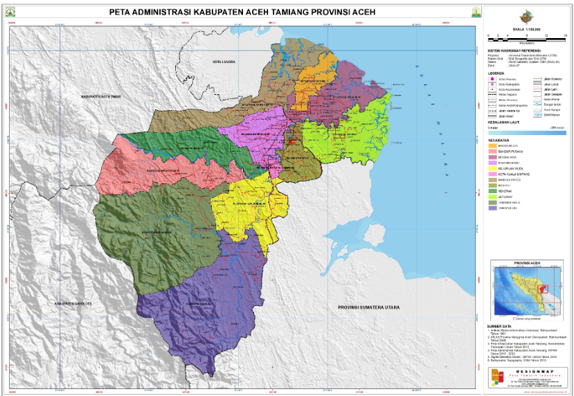

Aceh Tamiang
DEMOGRAFI
Demografi
Kabupaten Aceh Tamiang merupakan pecahan dari Kabupaten Aceh Timur dan merupakan satu-satunya kawasan di Aceh yang banyak bermukim etnis Melayu (60%). Suku Jawa (20%) membentuk suku kedua terbesar di kabupaten tersebut. Selain kedua etnis tersebut, suku Aceh (15%) juga banyak dijumpai di kabupaten ini. Sementara di daerah hulu terdapat Suku Gayo dan Suku Alas.
Kabupaten Aceh Tamiang terletak antara 03°53 ‘18,81″ – 04°32′ 56,76″ Lintang Utara dan 97°43′ 41,51″ – 8°14’ 45,41″ Bujur Timur dengan ketinggian rata-rata 20 – 700 meter di atas permukaan laut. Pada Tahun 2007, Kabupaten Aceh Tamiang mengalami pemekaran kecamatan sehingga wilayah administrasi menjadi 12 Kecamatan dan 213 kampung. Batas-batas Wilayah Kabupaten Aceh Tamiang, sebelah Utara berbatasan dengan Kabupaten Aceh Timur dan Kota Langsa, sebelah Timur dengan Propinsi Sumatera Utara, sebelah Selatan dengan Kabupaten Gayo Lues dan sebelah Barat dengan Kabupaten Aceh Timur dan Kabupaten Aceh Tenggara.
Luas wilayah Kabupaten Aceh Tamiang sebesar 195.702,50 ha, dengan lahan perkebunan perusahaan sebagai lahan terluas yang mencapai 46.817 ha, diikuti lahan perkebunan rakyat mencapai 44.460 ha. Kecamatan terluas di Kabupaten Aceh Tamiang adalah Tenggulun dengan luas wilayah sebesar 29.555 ha atau sekitar 15,10 persen dari luas wilayah Kabupaten Aceh Tamiang. Lokasi objek wisata alam di Kabupaten Aceh Tamiang ada di 13 lokasi yaitu Pantai Kupang, Air Terjun Sangka Pane, Jati Kasih Sumber Air Panas, Pantai Pusung Siung, Pantai Kuala Ketapang, Situs Bukit Kerang, Air Terjun Tujuh Tingkat, Pemandian Gunung Pandan, Tamsar Alur Biak, TPI, Air Terjun Aras Sembilan, DAM, dan Situs Bukit Resmi.